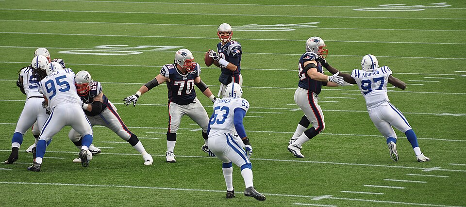

7x Super Bowl Champion
More championship rings than any player in NFL history.
5x Super Bowl MVP
Recognized as the game's best performer in five different title runs.
20+ Seasons Played
One of the longest and most consistent careers at quarterback.
Signature Moment: Super Bowl LI Comeback
In Super Bowl LI, Brady led the Patriots back from a 28-3 deficit against the Atlanta Falcons, capping the largest comeback in Super Bowl history and securing an overtime win.

Playing Style
Known for precision passing, pocket awareness, and clutch performances in critical moments.
Learn more about his playing styleAwards & Records
Brady's career includes major individual honors and NFL records.
- 3x NFL MVP
- 5x Super Bowl MVP
- Most career passing yards and touchdowns in NFL history